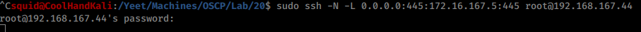
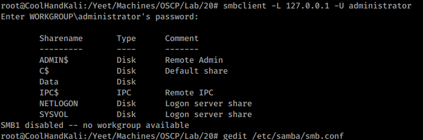

ssh local port forwarding
kali
middle guy
hidden
on kali
0.0.0.0 = bind ip (always keep to 0.0.0.0)
445 = bind port (set this to the port you want to be able to reach "localy'
172.16.167.5 = hidden ip
445 = distant port you want to forward
root@192.168.167.44 = login of middle guy
